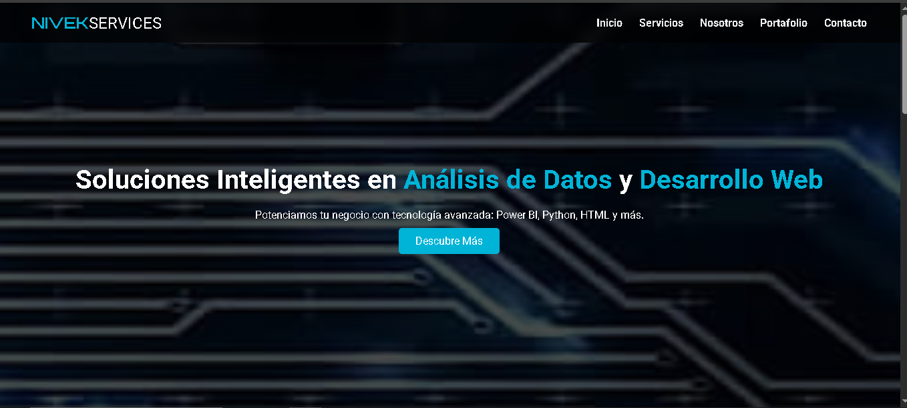
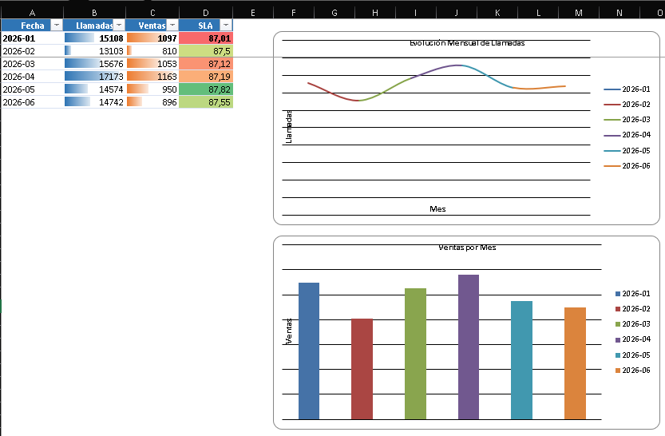
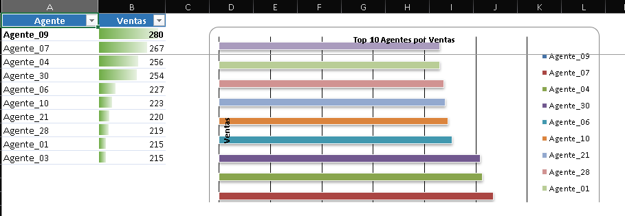
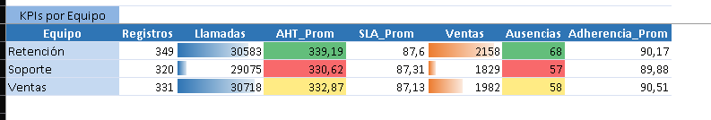

Python
Automatización, análisis de datos, aplicaciones de escritorio y APIs.
KEVIN GARCIA · DATA & PYTHON
Analista de datos en formación y desarrollador Python. Construyo dashboards, automatizaciones y herramientas digitales enfocadas en transformar información en decisiones.
$ python workforce_dashboard.py
✓ Archivo cargado correctamente
Total agentes: 30
Total llamadas: 90,376
Total ventas: 5,969
SLA promedio: 87.35%
▌
STACK
Una combinación práctica de análisis, automatización y desarrollo para resolver problemas de negocio.
Automatización, análisis de datos, aplicaciones de escritorio y APIs.
Limpieza, organización, fórmulas, reportes y transformación de información operativa.
Visualización de indicadores y construcción de reportes orientados a negocio.
Interfaces responsivas, JavaScript, APIs y control de versiones con Git/GitHub.
PORTAFOLIO
 Proyecto destacado
Proyecto destacado
Dashboard interactivo para analizar productividad y rendimiento operativo. Incluye limpieza de datos, KPIs, visualizaciones y ranking de agentes.

Plataforma personal para presentar habilidades, proyectos y servicios digitales, con backend para contacto y persistencia de datos mediante Neon PostgreSQL.



Análisis exploratorio realizado a partir de datos operativos para identificar tendencias, indicadores, rendimiento y oportunidades de mejora.
PERFIL
Mi enfoque combina análisis de datos con desarrollo de soluciones prácticas. Me interesa convertir procesos manuales y datos dispersos en herramientas que sean fáciles de entender y utilizar.
Actualmente estoy fortaleciendo mi perfil en Python, análisis de datos, SQL, visualización y desarrollo de aplicaciones, mientras construyo proyectos que puedan demostrar estas habilidades de forma concreta.
CONTACTO
Estoy abierto a oportunidades laborales remotas y proyectos relacionados con datos, automatización y desarrollo.